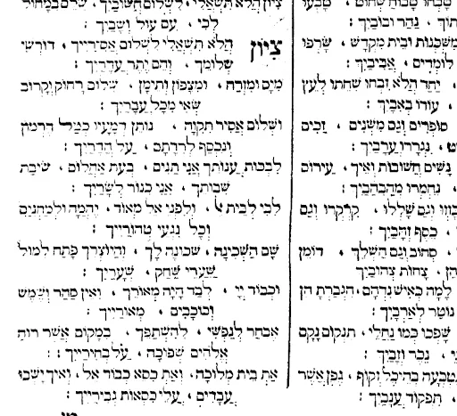

רבי אלעזר אזכרי, בעל ספר חרדים' מספר בספרו[1] על מנהג יפה שהיה להם, להתכנס בכל ערב ראש חודש בקברו של ר' יהודה אלעי הקבור בין מירון לצפת ולשיר שם את השיר "ארץ הקדושה, יקרה חמודה"[2]. טעם מנהגם היה משום שמבואר בכוזרי שהובא לעיל, שגאולתנו תלויה באהבת ארץ חמדה, אחד מהדברים המעוררים את אהבה הוא השירה.
רבים מגדולי הדורות שרו שירי ארץ ישראל לעורר את אהבה אליה, מפורסם הוא הפיוט – ציון הלא תשאלי של ר' יהודה הלוי.
רשימת שירי ארץ חמדה הבאנו בספרנו לכו נרננה.
[1]. חרדים פ"ב ממצות ל"ת התלוים בא"י

שירו של הבן איש חי
אם יש את נפשך להשיג השגה כלשהי על גודל כמיהתו של ה'בן איש חי' אל הארץ הטובה, כמה השתוקק לחון את אדמת הקדש, וכיצד נכסוף נכסף לראות בתפארת עוזה, כלך לך אל שיר הערגה שחיבר ה'בן איש חי' לכבודה של ארץ ישראל .
בשיר זה כמו פורט הבן איש חי על נימי התשוקה לארץ ישראל, ובין שורותיו נשקפת כמו שחר אהבתו הלוהטת אל ארץ חמדה. בלשון נרגשת, השולחת רמזים לפסוקי מקרא רבים וגם לפיוטיו של אחד מ'משוררי ציון' המובהקים – הלא הוא ר' יהודה הלוי – מתאר עד כמה הוא כמה ומשתוקק לארץ ישראל, לבית המקדש, ולקדוש ברוך הוא. לא בכדי הוסיף ה'בן איש חי' בראש השיר: "לכבוד ארץ ישראל, השי"ת יזכנו לראותה".
אֶל הָאָרֶץ חֶמְדָּה טוֹבָה אַךְ אַךְ אַךְ מִי יַעֲלֵנִי
כִּי אֲנִי חוֹלַת אַהֲבָה אַךְ אַךְ אַךְ מִי יִרְפָּאֵנִי
בִּקַּשְׁתִּי אֶת בֵּית חֶמְדָּתִי אַךְ אַךְ אַךְ הוּא כַּרְמִי שֶׁלִּי
וְאָנֹכִי לוֹ נִכְסַפְתִּי אַךְ אַךְ אַךְ יוֹמִי וְלֵילִי
גַּרְתִּי בְּתוֹךְ אַרְצוֹת עַמִּים אַךְ אַךְ אַךְ כְּשֶׂה פְזוּרָה
גַּם עָבַרְתִּי אָרְחוֹת יַמִּים אַךְ אַךְ אַךְ גּוֹלָה וְסוּרָה
דּוֹדִי אֲנִי לָךְ אוֹחִילָה אַךְ אַךְ אַךְ אַל תִּשְׁכָּחֵנִי
עִמְּךָ דוֹד כְּבַתְּחִלָּה אַךְ אַךְ אַךְ מִי יִתְּנֵנִי
הַדְרַת עִיר יְרוּשָׁלַיִם אַךְ אַךְ אַךְ נַפְשִׁי נִכְסְפָה
מִי יִתֵּן לִי כְנָפַיִם אַךְ אַךְ אַךְ בָּהֶם אָעוּפָה
וְאֶתְעַלֵּס בָּאֲהָבִים אַךְ אַךְ אַךְ עִם חֶמְדַּת לִבִּי
אֲהַלְּלוֹ בְּתוֹךְ רַבִּים אַךְ אַךְ אַךְ בְּאֶרֶץ צְבִי